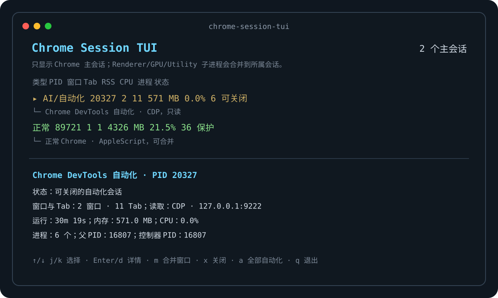

将 Renderer、GPU、Utility 等子进程归入对应 Chrome 会话。
macOS · Node.js · Ink
Chrome Session TUI
给 AI 测试场景准备的小型终端工具：把 Chrome 主会话和子进程聚合展示，识别自动化实例，并安全清理遗留进程。

识别 Headless、远程调试、Playwright、Puppeteer 和 DevTools 会话。
普通 Chrome 默认保护；自动化会话支持单个或批量关闭。
git clone https://github.com/holynova/chrome-session-tui.git cd chrome-session-tui pnpm install && pnpm --silent start